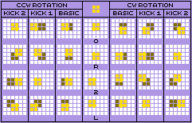

Introduction
Note: This guide is a work in progress. Some sections are missing or incomplete, and there may be some factual errors due to incomplete research.
To a casual Tetris player, rotating the O-piece appears to be completely useless. It's the only piece which does not move when you rotate it, and its identical rotation states typically prevent it from interacting with walls or other pieces. However, it turns out many stacker games both within and outside the Tetris series do actually implement game mechanics which can make it advantageous to rotate the O-piece.
My name is Dunspixel. I love playing a variety of Tetris games and learning about the mechanical differences between each one. I also have a very strong opinion about O-piece rotations and way too much free time, so I decided to make this comprehensive guide describing every known use for rotating the O-piece in the Tetris series and a variety of Tetris-like stacker games created by game developers in the Tetris community.
Rotating the O-piece may be nothing more than a meme to some, but many of the techniques in this guide really are practical and some can be utilised at all skill levels. With that said, I'm still going to include some useless and whimsical setups and techniques too, simply because they're fun. Useful or otherwise, I hope I can help you appreciate O-piece rotations for what they can really do.
Guideline Tetris
First of all, let's talk about the Tetris Guideline. It's a document which developers of Tetris games follow to ensure each game has some degree of mechanical consistency. The first Tetris game to follow the Tetris Guideline, at least in the form which evolved into what we know today, is Tetris Worlds from 2001.
The most important feature of the Tetris Guideline is the Super Rotation System, or SRS for short. We'll encounter a lot of rotation systems in this guide, but SRS is by far the one you'll see the most both in modern Tetris and in Tetris-like stackers. In short, SRS defines how pieces behave when they rotate, and how they can move if rotation causes them to collide with a wall or another piece.
- Tetris Guideline wiki pages: Hard Drop | TetrisWiki
Rotations and Wall Kicks
Since this doesn't include any specific uses for O-piece rotations, I'll keep it short.
Pieces can be in one of four orientations. For the purpose of this guide, I will be describing them using the "0R2L" rotation notation, where pieces spawn in the 0 orientation, and rotating clockwise changes to R, 2, L, then back to 0.
I will describe specific rotations (i.e. those where the orientation is relevant) as combinations of the above orientations. For example, a clockwise rotation from 0 to R will be written as "0R", a clockwise 180-degree rotation from 0 to 2 will be written as "0R2", and a single button 180-degree rotation from 0 to 2 will be written as "02".
Wall kicks are a feature of many modern rotation systems, which allow pieces to move when rotated if their new position is obstructed by a wall or another piece. In SRS, four alternative positions are checked if basic rotation fails, and the piece will move to the first one that succeeds. Different rotation systems may define different offsets, or instead try to kick by rotating around an alternate centre.
- SRS wiki pages: Hard Drop | TetrisWiki
- Alternative visualisation of wall kicks on FOUR.lol
Move-Reset Lock Delay
Finally! I get to talk about an actual use for O-piece rotations! This one is by far the most practical O-piece rotation technique you can use in the Tetris series at any skill level. Seriously, even if you only learn one thing from this guide, let it be this.
Many Tetris games, including all guideline games, implement a lock delay. This means when the active piece reaches the bottom of the board or the top of the stack, the game provides a brief window of time (typically 30 frames or half a second) to move or rotate the piece before it locks into place.
Move-Reset Lock Delay, as implemented in most guideline Tetris games, resets whenever the active piece is moved or rotated. Earlier guideline games such as Tetris Worlds and Tetris DS allow you to do this indefinitely, while later games impose a limit of 15 resets per piece.
Repeatedly resetting the lock delay just before the piece locks is called "stalling". This is a versatile technique which is useful at a variety of skill levels, especially in multiplayer battles. Some examples include:
- Giving yourself extra time to decide where to place a piece
- Delaying a line clear in battle to block or mitigate an incoming attack that would cause you to top out
- Delaying a piece placement to receive garbage lines from an imminent attack, then using this garbage for a counterspike
If your active piece is an O-piece, then all of this can be achieved by rotating it while it's on the floor. In tight areas, many pieces can wall kick to unexpected places when rotated, especially if you're less familiar with SRS. Because the O-piece does not move on rotation in guideline Tetris games, it is the easiest and safest piece to use when stalling.
- Lock Delay wiki pages: Hard Drop | TetrisWiki
Tetris Effect and Initial Rotation
Tetris Effect features two major mechanics which make O-piece rotations especially useful when used together:
- The Zone, which stops time and allows you to perform massive line clears
- Initial Rotation System (IRS), which allows you to spawn pieces in a pre-rotated state and is quite possibly one of the best things added to Tetris
When using Zone to clear 20 or more lines at once, you have limited space to spawn and manoeuvre pieces without topping out and ending the zone. To prevent topping out prematurely, hold the rotation button on your active piece while placing it, which will activate IRS and spawn the next piece rotated in that direction.
With most pieces, if your active piece is already in the desired orientation and you are not already holding the appropriate rotation button, you must first perform a counter-rotation in the opposite direction to the required spawn orientation for the next piece, which will then allow you to rotate it back and hard-drop the piece while that rotation button is still held.
Thanks to its identical rotation states, the O-piece eliminates the need for the counter-rotation, thus making it the easiest piece to use with IRS.
Puyo Puyo Tetris and Fusion O-Spins
This is much more whimsical than the other uses in this chapter, having pretty much zero practical use. However, seeing an O-piece wall kick in a modern guideline Tetris game is absolutely hilarious and I love it.
Puyo Puyo Tetris implements a slightly altered SRS offset table which defines wall kicks for the O-piece. These wall kicks effectively undo the offset applied to the internal rotation of the O-piece and were mainly implemented for use with its equivalent pentomino, the P-piece, in the game's Party mode.
Triggering this wall kick for the standard O-piece is much tricker and can only be done in the game's Fusion mode. This mode combines Puyo Puyo with Tetris on the same board, introducing some unusual behaviour when Puyos and Tetris pieces interact with each other. By soft dropping a piece on top of a Puyo stack, the Tetris piece will slowly break through the stack, and activate the next piece which you can use at the same time.
There is a complex setup which allows you to exploit this behaviour and execute an O-spin: TODO: Add a screenshot
- A Tetris stack with a two wide, minimum two high well (preferably higher)
- Puyos filling the well in this stack
- An overhang above the well, with enough space to the side and underneath to fit an O-piece
- A fully enclosed O-shaped hole inside this overhang, with the floor being one block high
- Access to two consecutive O-pieces via the next and/or hold queues
By sliding the first O-piece under the overhang and soft-dropping it onto the Puyo stack, you can use the time spent breaking the Puyo stack to place the second O-piece on top of where the first piece locked and perform a 0R rotation.
When the first piece reaches the bottom, it will clear the two lines at the bottom of the stack and shift the overhang downwards, causing the floor of the O-shaped hole to overlap with the O-piece. Just after the line clear, performing a R0 rotation will then trigger an upwards wall kick and move the O-piece into the O-shaped hole.
Non-Guideline Tetris
Before the Tetris Guideline existed, Tetris games used a variety of rotation systems and game mechanics which aren't seen in modern entries. Some of these allow for some very interesting techniques.
Tetris The Absolute The Grand Master 2 The RO Medal PLUS
Tetris The Grand Master 2 (TGM2) features six medals which can be achieved by performing a variety of tasks within a single round. One of these medals is the RO (rotation) medal, achieved by maintaining an average of at least 6 rotations for every 5 pieces. If you do this, you will receive a bronze RO medal at level 300, a silver medal at 700, and a gold medal at 999.
All rotations for all pieces count towards this medal, making O-piece rotations very useful for acquiring and upgrading it.
Tetris 64 and its Inexplicably Obscure Rotation System
By default, Tetris 64 uses Sega Rotation, which was originally made for Sega's arcade Tetris and is the rotation system that was adapted for the TGM games. However, this game offers several options to alter how rotations work:
- Offset Turn: Enables wall kicks
- Double Turn: Enables limited 180-degree rotations, usable by double-tapping in a tight space
- Rotate Center: Enables an alternative, unique rotation system
Yeah, this game just casually drops an entire rotation system that is unique to Tetris 64 and intentionally permits O-spins via wall kicks in the second page of the options menu. No wonder this slipped under most of the Tetris community's radar!
Anyway, Rotate Center activates what I call the Tetris 64 Rotation System, as it's not known to be used in any other Tetris game. This rotation system defines four distinct rotation states for every piece, including the O-piece. Because of this, the O-piece actually moves when rotated. When combined with Offset Turn and/or Double Turn, this can be used to execute genuine, developer-intended O-spins.
Unfortunately, I wasn't able to find any information about how this rotation system and its wall kicks actually work, and discussions about the unusual spins this game permits are limited. I guess this is all I can say about Tetris 64, then-
So I decided to experiment with the game and document the entire Tetris 64 rotation system myself, specifically for a guide about O-piece rotations. Well, only the tetrominoes. There's a Bio Tetris mode which can spawn anything from monominoes to pentominoes based on your heart rate, but those were outside the scope of my research.
 Here is an offset table for the O-piece. The orientations are in the middle, with basic rotations on either side. Then, each rotation has two possible wall kicks, one for each direction. The left kick will always be prioritised over the right kick if both would succeed.
TODO: Describe the actual O-Spins that's literally what this guide is for
- Tetris 64 Rotation wiki pages: Hard Drop | TetrisWiki
Audio Cues
To end the non-guideline section, I'd like to look at another fun use for O-piece rotations that will be impractical for most people. However, if you like beating scores in blindfolded categories, this may still be useful for you.
Compared to more recent entries, older Tetris games use very primitive rotation systems. This section will likely apply to any Tetris game with rotation SFX and no wall kicks, but I'll use Nintendo Rotation System (NRS), as seen in NES and Game Boy Tetris, to illustrate audio cues. The rotation SFX and lack of wall kicks in these games can be used while blindfolded to determine what your active piece is, at least to some extent.
The following steps can be applied in NES Tetris:
- Perform a 0L rotation, DAS to the left wall, then attempt an L0 rotation. If the L0 rotation succeeds, there is a 100% chance you have an O-piece. Yay!
- If the L0 rotation fails, move one column to the right and try again. If this still fails, there is a 100% chance you have an I-piece.
- If the second L0 rotation succeeds, perform a 0R rotation (this will always succeed), then attempt to move the piece 1 column to the left. If this movement succeeds, then there is a 50% chance you have an S-piece and a 50% chance you have a Z-piece.
- If the movement fails, there is a 33% chance you have a J-piece, a 33% chance you have an L-piece, and a 33% chance you have a T-piece.
- Unfortunately, I don't yet know of any ways to distinguish S/Z and J/L/T. If you do, please let me know!
GB Tetris instead uses a mirrored, "left-handed" version of NRS, but the above still applies if all movements and rotations are mirrored. Beware its 18-height playfield, which will give you less time to determine your piece.
While it's not possible to play indefinitely without exceptional luck, the above steps can theoretically be used to clear a decent amount of lines before topping out.
- NRS wiki pages: Hard Drop | TetrisWiki
Tetris-like Stackers
Outside of the Tetris series is an entire genre inspired by it. These games, as well as Tetris, are known as stackers. As they are not bound by the Tetris Guideline, these stackers can be much more creative with how pieces behave and interact with each other, introducing a variety of new game mechanics that can set them apart from Tetris. Many stackers implement custom rotation systems which introduce unique ways to rotate O-pieces and execute O-spins.
Unless otherwise specified, the techniques described for each game are performed with that game's default rotation system. Many community-made stacker games allow the selection of rotation systems from other games, which would permit the use of those games' O-piece rotation techniques. However, describing them in each game that uses them would result in far too much repetition.
Ascension and its Extensive Wall Kicks
While Ascension (ASC) features highly customisable pieces which allow you to play with any type of polymino that can fit in a 5x5 grid, I'll be describing things based on the default tetromino set. With that said, this game's O-Spin techniques should be generally applicable to any custom O-piece regardless of where you put its centre block as all pieces use the same offset table.
ASC uses an offset table which defines a massive 21 wall kicks for when basic rotation fails. In addition, because pieces are defined in a 5x5 area, the O-piece will always have a centre which allows it to move on rotation.
TODO: Describe some specific O-spin setups
- ASC Wiki - See the "Info" page for more information about ASC wall kicks
ASC by winterNebs
Nuketris and Worm Mode
Nuketris mostly uses SRS, but with some modifications to allow O-spins. The O-piece will rotate around its "centre" block without the SRS offset applied to it, and uses the same offset table as the rest of the pieces (except for the I-piece). The centre block of the O-piece starts in the bottom-right corner in most modes.
TODO: Add some details about 180-degree rotations
Nuketris also features a unique mode called Worm, which involves navigating an O-piece through an infinite tunnel which ascends at increasing speeds using O-Spins and your knowledge of wall kicks. You must survive for as long as possible without topping out due to your O-piece being pushed above the ceiling. In this mode, the centre block of the O-piece is highlighted, and starts in the top-left instead of the bottom-right.
Needless to say, I love this mode!
TODO: Write a guide for Worm mode
Nuketris by nukeexplosions
Techmino and Transformative O-Spins
Techmino Rotation System (TRS) functions mostly like SRS, but with a few exceptions. It just so happens that one of these exceptions is how O-pieces behave when you perform very specific rotations in certain situations - it transforms into other pieces and can be used to execute spins which the game registers as O-Spins.
Transformative O-Spins can be performed by moving an O-piece somewhere you would normally perform a spin with a different piece, then performing the relevant rotation sequence from the list below. Note that "F" is short for "Flip" and refers to the game's 180-degree rotation button.
- Z: LRL
- S: RLR
- J: LLR
- L: RRL
- T: LLL or RRR
- I: FFF
- NOT_A_ROBOT's Techmino FAQ - O-Spin section originally by C29H25N3O5
Techmino by 26F Studio
TETR.IO and All-Spin
While TETR.IO does implement O-Spin recognition, O-piece rotations don't really have any practical use (aside from the previously mentioned stalling techniques) with the game's default rotation system, SRS+. However, there are a few fun things you can do with them.
TETR.IO offers several options for spin recognition, such as:
- T-Spins: Only recognises T-Spins as spins
- All-Spin: Recognises spins for all pieces
- Stupid: Recognises every floor rotation as a "spin"
Of course, setting the allowed spins to "Stupid" will allow you to O-Spin with every O-piece, but it's clear that this is just a novelty feature and it makes it feel a bit too easy.
O-Spins can still be executed when allowed spins is set to "All-Spin", though it's still very impractical. This was probably intended for use with the game's other rotation system options based on other stacker games, but it can actually be executed in SRS, too. If an O-shaped hole is pushed up to the exact location where the O-piece spawns, or if a custom map is created where such a hole already exists, rotating the piece there will register as an O-Spin.
TETR.IO by osk
Closing Thoughts
Concluding words! I'll add to this later.
For now, thank you to everyone whose guides, research, and stacker games I've cited/featured, and to everyone else who is reading this guide!
I welcome feedback and constructive criticism. In particular, I'd like to know:
- Do you know of any stackers I can add to the guide?
- Are there any factual errors that need correcting?
- Are there more mechanics and techniques I can add to existing sections?
- Can S/Z and J/L/T be distinguished while blindfolded in NES Tetris?
- Is there anything I can explain better? (sorry i'm bad at explaining things)
Random Ramblings
This isn't really part of the guide, but I like rambling. Maybe you'll find some of it interesting.
You may wonder why I always say "Tetris games" and "Tetris-like stackers", instead of "versions of Tetris". I don't like the latter because it implies the Tetris series is just the same game with minor visual differences, and that other stacker games are just knock-offs of Tetris that don't add anything to the gameplay. I've played a lot of stackers, and I assure you they all feel very different to play at anything higher than a casual level, even if they have to adhere to the Tetris Guideline.
As for "Tetris-like stackers", this is because the community often uses Tetris to describe the entire stacker genre. Their fundamental mechanics may look and feel similar to Tetris, but they are not entries in the Tetris series. Many of them are respected by the Tetris community as games in their own right.
Tetris Effect is not a rhythm game. Rather, you are a rhythm game which Tetris Effect plays perfectly. Tetris Effect has exactly one rhythm-based game mechanic and it requires you to be dead in Connected mode to utilise it.
My mind is blown by the fact Tetris 64's rotation system exists and it's shocking to me how so few people know about it. With techniques only seen in Tetris-like stacker games to this day, Tetris 64 was years ahead of its time.
I like purple a normal amount, as I'm sure you can tell.
I often wonder, how many mainline Tetris games are there, and which ones count as mainline?
If you ever think you're useless, know that there's a huge guide about how to rotate the square in Tetris. No matter what you may think about yourself, you are good for something even if you don't know it yet. I hope you can find it one day.